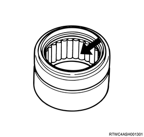
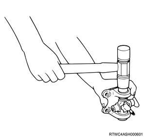
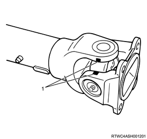
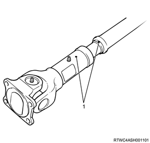

1. Install the spider to the yoke.
Note
- Align with the alignment marks during installation to the yoke.
2. Install the needle roller bearing to the yoke.
Note
- Apply disulfide molybdenum grease or multi-purpose grease BESCO L-2 to the inside of the bearing cap.
Application quantity： about 1.2 g { about 0.042 oz }

Note
- Use a wooden or copper hammer or press to insert the needle roller bearing into the spider up to the snap ring installing depth.
Caution
- If set to the yoke at a wrong angle, the needle roller bearing may not be installed smoothly.
- Excessive hammering may damage the needle roller bearing.

Note
- Align the alignment marks to connect the yoke.

3. Install the snap ring to the yoke.
Note
- Discard the used snap ring and install a new one.
- Set the bearing cap at the specified position and select and install a snap ring of right thickness.
- Make an adjustment so as to maintain the end play of the spider pin within the specified value.
Standard： 0.1 mm or less { 0.004 in or less }
| Snap ring thickness | Identification color |
| ： 1.50 mm { 0.059 in } | Light blue |
| ： 1.53 mm { 0.060 in } | White |
| ： 1.56 mm { 0.061 in } | Pink |
| ： 1.59 mm { 0.063 in } | Yellow |
| ： 1.62 mm { 0.064 in } | Green |
| ： 1.65 mm { 0.065 in } | Brown |
| ： 1.68 mm { 0.066 in } | No identification color |
Caution
- Be careful to use snap rings of the same thickness at both ends.
4. Install the seal to the spline yoke.
Note
- Discard the used seal and install a new one.
5. Install the tube assembly to the spline yoke.
Note
- Align the alignment mark to install the tube assembly to the spline yoke.
